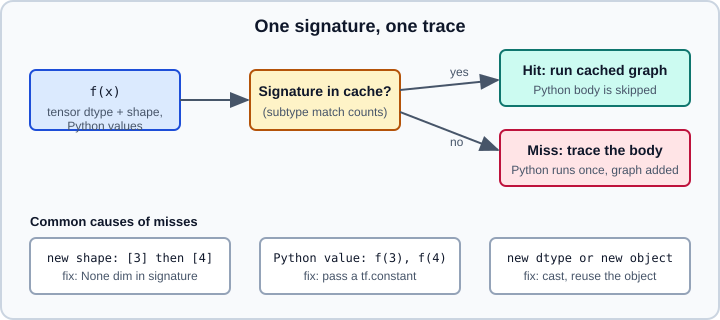

Graphs, tf.function, AutoGraph & Retracing
|
This content was generated with the assistance of AI and should be verified against the official documentation before being relied on in production. |
TensorFlow 2 runs eagerly by default: each operation executes immediately and returns a value. tf.function compiles a Python function into a tf.Graph, which TensorFlow can optimize, run without the Python interpreter, and save in a SavedModel. The price is that the function body is executed by Python only while it is being traced, which is the source of almost every surprise: side effects that run once, print calls that go quiet, and functions that keep retracing. This page explains graphs, AutoGraph, the trace cache, input_signature and reduce_retracing, and the Python side-effect pitfalls.
Related pages: Tensors and Variables (what a graph operates on), Automatic Differentiation with GradientTape (gradients inside traced functions), Modules, A Training Loop with TF Core, SavedModel & Signatures and Performance, XLA & Profiling. The analogous idea in PyTorch is torch.compile; see Performance Tuning.
It targets Python 3.13 and TensorFlow 2.21 with Keras 3.15 (TensorFlow 2.22 is labelled "upcoming" and not covered), checked against the official documentation on 2026-10-30. Examples were run on Python 3.13 with TensorFlow 2.21 and Keras 3.15 (CPU) on 2026-10-31.
Why graphs
A tf.Graph is a data structure of tf.Operation nodes connected by tf.Tensor edges. Compared with eager execution it offers:
-
Portability: a graph can be saved, restored and run without the original Python code, on servers, mobile devices and TPUs.
-
Optimization: the Grappler optimizer performs constant folding, common-subexpression elimination, operation fusion and parallel scheduling of independent branches.
-
Lower per-operation overhead: the Python interpreter is out of the loop, which matters for models made of many small operations. The official guide’s benchmark shows roughly a five-fold gain (about 0.8 s against 4.1 s), but the gain depends heavily on the computation.
Eager mode remains better for debugging and prototyping. The usual workflow is to write eagerly, then wrap hot paths (typically a whole training step) in tf.function. Keras fit already does this for you; see compile, fit, evaluate & predict.
Using tf.function
import tensorflow as tf
@tf.function
def affine(x, w, b):
return tf.matmul(x, w) + b
x = tf.random.normal((4, 3))
w = tf.random.normal((3, 2))
b = tf.zeros(2)
print(affine(x, w, b).shape) # (4, 2)
# Equivalent without the decorator; the original stays available
def plain(x, w, b):
return tf.matmul(x, w) + b
fast = tf.function(plain)
print(fast.python_function is plain) # TrueThe decorator also applies to every function the decorated function calls, so decorating the outermost function is enough. The object you get back is a polymorphic function: it keeps a cache of graphs, one per input signature, each stored in a ConcreteFunction.
AutoGraph
AutoGraph is on by default and rewrites Python source so that control flow depending on tensor values becomes graph operations:
| Python construct | Becomes |
|---|---|
|
|
|
|
|
|
|
converted along with the loop |
|
evaluated once, while tracing |
@tf.function
def collatz_steps(n): # n is an int32 tensor
steps = tf.constant(0)
while n != 1: # tensor condition: becomes tf.while_loop
if n % 2 == 0: # tensor condition: becomes tf.cond
n = n // 2
else:
n = 3 * n + 1
steps += 1
return steps
print(collatz_steps(tf.constant(6))) # tf.Tensor(8, shape=(), dtype=int32)
# Inspect what AutoGraph generated
print(tf.autograph.to_code(collatz_steps.python_function))Rules of thumb:
-
A Python condition (a plain
bool,None, a Python int) is evaluated once at trace time, and only that branch enters the graph. A tensor condition produces both branches in the graph. -
Looping over a Python list or
rangeunrolls the loop: one copy of the body per iteration, which can make the graph huge and slow to trace. Loop over a tensor (tf.range) or atf.data.Datasetso the body appears once. -
Values that change type or shape across loop iterations are rejected: loop variables must keep the same dtype and compatible shape. Use
tf.TensorArrayto accumulate a growing sequence. -
Recursive
tf.functioncalls are not supported. -
Variables must exist before the loop uses them; see the section on variables below.
@tf.function
def running_sum(xs): # xs: float32 tensor of shape [n]
ta = tf.TensorArray(tf.float32, size=tf.shape(xs)[0])
total = tf.constant(0.0)
for i in tf.range(tf.shape(xs)[0]): # tensor range: one while_loop
total += xs[i]
ta = ta.write(i, total)
return ta.stack()
print(running_sum(tf.constant([1.0, 2.0, 3.0]))) # [1. 3. 6.]The trace cache and retracing
Calling a tf.function first computes a signature for the arguments:
-
for a tensor: its dtype and shape;
-
for a Python primitive such as an int, float, bool or string: the value itself (so
f(3)andf(4)are different signatures); -
for other Python objects: their identity or structure, depending on the type.
If a cached ConcreteFunction matches, it is reused. Matching uses subtyping, so a trace for shape [None, None] can serve a call with shape [1, 2], and the most specific match is preferred. Otherwise TensorFlow traces the Python body again, which means running it once to build a new graph. Each trace costs from tens of milliseconds to seconds for big models, so a function that keeps retracing can be slower than eager code. TensorFlow warns when a function is retraced many times.

Changes to globals and free variables do not form part of the signature, so they do not trigger a retrace; instead the old value stays baked into the graph (see pitfalls below).
@tf.function
def double(a):
print("Tracing with", a) # Python print: runs only while tracing
return a + a
print(double(tf.constant(1))) # Tracing, then int32 scalar result 2
print(double(tf.constant(2))) # cache hit: no print
print(double(tf.constant(1.5))) # new dtype: traces again
print(double(tf.constant([1, 2]))) # new shape: traces again
print(double(3)) # Python int: traces for the value 3
print(double(4)) # ...and again for the value 4To see how many graphs exist, call double.pretty_printed_concrete_signatures(). The Python print is a convenient retrace detector, because it appears exactly when a trace happens.
Typical retracing causes and fixes
| Cause | Fix |
|---|---|
Python numbers passed as arguments (epoch, step, learning rate) |
wrap with |
Variable-length batches (the last smaller batch, different sequence lengths) |
use |
Fresh Python objects each call (new lists, new model or optimizer instances created inside the loop) |
create objects once, outside the function |
Mixing dtypes ( |
cast at the boundary, see NumPy Interop & tf.experimental.numpy |
Passing NumPy arrays directly |
convert once to tensors; each distinct NumPy argument can be treated as a different constant |
input_signature
input_signature fixes the accepted argument types ahead of time with tf.TensorSpec objects. There is exactly one graph, calls with incompatible arguments raise an error, and None in a shape declares a dimension that can vary.
@tf.function(input_signature=[tf.TensorSpec(shape=[None, 3], dtype=tf.float32)])
def normalize(x):
mean = tf.reduce_mean(x, axis=0, keepdims=True)
return x - mean
print(normalize(tf.ones((5, 3))).shape) # (5, 3)
print(normalize(tf.ones((8, 3))).shape) # (8, 3): same trace, no retrace
try:
normalize(tf.ones((8, 4))) # wrong shape for the signature
except (TypeError, ValueError) as e:
print("rejected:", type(e).__name__)Use it when you export a function (a SavedModel signature needs concrete input types, see SavedModel & Signatures), when callers are untrusted, or when you want the compiled shape contract to be explicit. It also constrains Python arguments: a signature cannot hold a Python scalar unless you specify a TensorSpec for it, which turns the argument into a tensor.
reduce_retracing
tf.function(reduce_retracing=True) asks TensorFlow to generalize automatically. After it sees different shapes for the same argument it traces a more general (supertype) signature, such as shape (None,) instead of (3,) and (4,), then reuses that. It is less precise than a hand-written input_signature but needs no up-front declaration, which is convenient for library code and for models called with several input shapes. It replaces the older experimental_relax_shapes argument, which is the name you will find in older code. TensorFlow 2.21 still accepts it, behaves the same way and logs a deprecation warning (experimental_relax_shapes is deprecated, use reduce_retracing instead), so prefer the new name.
@tf.function(reduce_retracing=True)
def batch_mean(x):
print("trace", x.shape)
return tf.reduce_mean(x, axis=0)
batch_mean(tf.ones((4, 3))) # trace (4, 3)
batch_mean(tf.ones((5, 3))) # generalizes: trace (None, 3)
batch_mean(tf.ones((9, 3))) # served by the general trace, no printNote that a more general trace can be slower, because XLA and some kernels exploit static shapes. If performance counts, bucket the shapes and use a few fixed traces.
Concrete functions
get_concrete_function traces without executing and returns the ConcreteFunction for given specs or example values. It is how SavedModels pick up signatures and how you can inspect the graph.
@tf.function
def square(x):
return x * x
cf = square.get_concrete_function(tf.TensorSpec(shape=[None], dtype=tf.float32))
print(cf.structured_input_signature)
print(cf(tf.constant([1.0, 2.0]))) # [1. 4.]
graph = cf.graph
print([op.name for op in graph.get_operations()][:4]) # ['x', 'mul', 'Identity']
# Python values are baked into the concrete signature
@tf.function
def power(a, b):
return a ** b
cf2 = power.get_concrete_function(a=tf.TensorSpec([], tf.float32), b=2)
# cf2 only accepts b == 2Python side effects
Only TensorFlow operations are recorded in the graph. Everything else in the Python body runs once, while tracing, and is absent from later calls:
| Python code | Behaviour in a traced function | Replacement |
|---|---|---|
|
prints once per trace, with symbolic tensors |
|
|
mutates once at trace time, and the stored tensors are symbolic |
|
assigning a global or attribute with a tensor |
leaks a symbolic tensor; later use raises an error |
return the value |
|
runs only during tracing |
|
|
advances once |
iterate over a |
random numbers from |
one value frozen into the graph |
|
|
executes during trace only |
|
counter = tf.Variable(0)
python_counter = 0
seen = []
@tf.function
def step(x):
global python_counter
python_counter += 1 # runs at trace time only
seen.append(x) # appends a symbolic tensor once
counter.assign_add(1) # a graph op: runs on every call
tf.print("x =", x) # runs on every call
return x + 1
for i in range(3):
step(tf.constant(i))
print(python_counter) # 1, not 3 (one trace)
print(counter.numpy()) # 3Further consequences:
-
Execution is non-strict: a graph runs only the operations needed for its outputs or for documented side effects (variable mutation, I/O, assertions via
tf.debugging). An unused operation that would raise in eager mode may be skipped. -
Python control flow that depends on a global read at trace time bakes in the value seen then. Changing a global later does not retrace; pass it as an argument.
-
tf.init_scopecan lift operations out of the function graph, but the official guide notes it has side effects of its own, so avoid it unless required. -
tf.py_functionruns arbitrary Python on every call. It is not portable, cannot be saved in a SavedModel, and scales poorly in distributed settings; use it as a last resort. -
Leaking a tensor out of a traced function (through a global or a container) raises an error when used later; return everything you need.
Variables and objects
Create tf.Variable objects, Keras layers, models and optimizers outside the function and only mutate them inside; tracing is allowed to create variables only on the first call, and creating them on later traces raises an error. That is why Keras builds layers before the first traced call, and why tf.Module is useful for grouping state (see Modules).
class Counter(tf.Module):
def __init__(self):
super().__init__()
self.count = None # created lazily, once
@tf.function
def __call__(self):
if self.count is None: # Python condition: evaluated at trace time
self.count = tf.Variable(0)
self.count.assign_add(1)
return self.count
c = Counter()
print(c().numpy(), c().numpy()) # 1 2Debugging
-
tf.config.run_functions_eagerly(True)makes everytf.functionrun as plain Python, so you can useprint, breakpoints and exceptions with real values. Turn it back off withFalse; Kerascompile(run_eagerly=True)does the same for training. -
tf.printandtf.debugging.assert_*work inside graphs. -
tf.autograph.to_code(f.python_function)shows the converted source;cf.graph.as_graph_def()shows the graph. -
If an error points at generated code, temporarily decorate with
autograph=Falseto rule AutoGraph out.
Performance notes
-
Wrap as much as possible, ideally a whole training step including the tape and optimizer update, into one
tf.function. -
Prefer tensor arguments to Python objects.
-
tf.function(jit_compile=True)compiles the function with XLA, which can fuse many small operations and help control-flow-heavy code. It requires static shapes for best results and not every operation is supported; see Performance, XLA & Profiling. -
The first call includes tracing, so benchmark after a warm-up call.
References
-
TensorFlow guide, Introduction to graphs and tf.function: https://www.tensorflow.org/guide/intro_to_graphs
-
TensorFlow guide, Better performance with tf.function: https://www.tensorflow.org/guide/function
-
TensorFlow API,
tf.function: https://www.tensorflow.org/api_docs/python/tf/function -
TensorFlow API,
tf.autograph: https://www.tensorflow.org/api_docs/python/tf/autograph -
TensorFlow guide, Graph optimization (Grappler): https://www.tensorflow.org/guide/graph_optimization
-
TensorFlow API,
tf.config.run_functions_eagerly: https://www.tensorflow.org/api_docs/python/tf/config/run_functions_eagerly